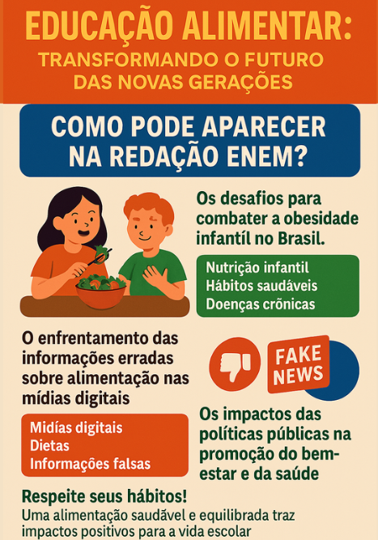

Temas para redação do enem

OS DESAFIOS PARA COMBATER A OBESIDADE INFANTIL NO BRASIL
Argumento 1 — Por causa e consequência
Tese: A implementação de programas de educação alimentar nas escolas pode ajudar a reduzir o consumo de alimentos ultraprocessados entre crianças e adolescentes
Causa: As escolas passam a oferecer informações claras e práticas sobre os malefícios dos alimentos ultraprocessados.
Consequência: Os alunos fazem escolhas alimentares mais saudáveis, reduzindo o consumo desses produtos e prevenindo doenças como obesidade e problemas cardiovasculares.
Argumento 2 — Por raciocínio lógico
Tese: A falta de educação alimentar nas escolas públicas brasileiras contribui significativamente para o aumento da obesidade infantil nas áreas urbanas.
Causa: Sem educação alimentar, as crianças não aprendem sobre os riscos de uma dieta inadequada.
Consequência: Isso leva a escolhas alimentares ruins, como alimentos ricos em gordura e açúcar, resultando no aumento da obesidade infantil.
Argumento 3 — Por comparação
Tese: A promoção de atividades educativas sobre alimentação saudável em escolas de ensino fundamental pode melhorar o comportamento alimentar dos estudantes e reduzir o risco de doenças relacionadas à má nutrição.
Causa: Em escolas com programas de educação alimentar, os estudantes desenvolvem maior consciência nutricional.
Consequência: Isso leva a melhores hábitos alimentares, diferentemente das escolas que não oferecem tais atividades, onde os alunos tendem a consumir fast food e refrigerantes, aumentando o risco de doenças como diabetes e hipertensão.
Argumento 4 — Por exemplificação
Tese: A educação nutricional, focada na conscientização sobre rótulos de alimentos, pode capacitar os adolescentes a tomar decisões mais informadas sobre sua alimentação e combater o aumento de doenças como diabetes tipo 2.
Exemplo (Causa): Programas escolares que ensinam a ler rótulos alimentares.
Consequência: Alunos passam a identificar níveis de açúcar, sódio e gordura, levando à redução de até 30% no consumo de processados, como mostra estudo feito em escolas de São Paulo.
Argumento 5 — Por histórico
Tese: A introdução de aulas de educação alimentar e nutricional nos currículos escolares pode promover uma mudança de longo prazo nos hábitos alimentares das futuras gerações e melhorar a saúde pública.
Causa: Países como Japão e Finlândia implementaram esse tipo de educação décadas atrás.
Consequência: Houve significativa redução de obesidade infantil, demonstrando que medidas semelhantes no Brasil podem gerar benefícios duradouros na saúde pública.
Argumento 6 — Por autoridade
Tese: A educação nutricional voltada para os pais, junto com a educação alimentar nas escolas, pode ser mais eficaz na promoção de hábitos alimentares saudáveis nas crianças do que apenas a intervenção escolar isolada.
Autoridade (Causa): Especialistas como a Dra. Maria Silva e estudos da Sociedade Brasileira de Pediatria apontam que o envolvimento da família é essencial.
Consequência: Crianças apresentam mudanças mais duradouras nos hábitos alimentares quando há apoio familiar reforçando o que é ensinado na escola.